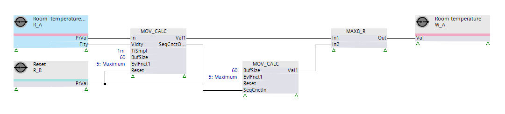

[MOV_CALC] 移动计算
功能块 MOV_CALC 计算持续更新的内部数据缓冲区的预配置评估函数。
MOV_CALC 计算持续更新的内部数据缓冲区的预配置评估函数。
MOV_CALC 循环接收输入值[In]并将其存储到内部缓冲区中。缓冲区的大小在输入 [BufSize] 处配置（最大 60）。缓冲区包含值和对值进行采样的时间的时间戳。
Storing the input data
将输入数据存储到缓冲区可以通过两种方式触发：
- Impulse (rising edge) at input [Trig]
- Internal timer for the function block, configured via input [TiSmpl]

输入 [TiSmpl] 的值 -1s 将禁用内部定时器。在这种情况下，缓冲区中的新值将仅通过输入 [Trig] 添加。
当缓冲区填满数据并请求存储新值时，缓冲区中最旧（最早）的样本将被新值覆盖。
仅当输入值有效时，才会将其存储在缓冲区中。输入值的有效性由 [Vldty] 输入定义。
Enable and disable the function
输入 [EnFnct] 禁用功能块（输出设置为默认值）。
禁用功能块不会清除内部缓冲区。
Reset
[Reset] 输入用于清除内部缓冲区并重新启动计算。
Calculation
该功能块可为缓冲区中的数据计算最多四个评估函数。
这些功能在输入 [EvlFnct1] ... [EvlFnct4] 处配置。
评估函数的结果在输出 [Val1] ... [Val4] 处提供。
Buffer behavior
当缓冲区中添加新值时，该功能块在输出 [UpdInd] 处提供脉冲。
[RecCnt] 输出提供缓冲区中收集的采样值的数量。
输出 [FstVal] 提供缓冲区中的第一个（最早）值。
输出 [FstTiStm] 提供接收缓冲区中第一个（最早）值的时间。
输出 [LstVal] 提供缓冲区中的最后（最新）值。
输出 [LstTiStm] 提供接收缓冲区中最后一个（最新）值的时间。
Persistence of the buffer values
如果启动时 [Pers] = 1，MOV_CALC 从关联的 BACnet 对象中读取最后保存的缓冲区值，并将它们用作初始缓冲区值。如果发生错误或 [Pers] = 0，则缓冲区为空。
属性“缓冲区大小”、“最后值索引”、“记录计数”、“值”和“值的时间戳”必须在关联的 BACnet 对象上作为扩展属性可用（“通过持久性扩展”=“移动计算”）。
输出 [Dstb] 和 [ErrCode] 指示从关联的 BACnet 对象读取最后保存的值时是否发生访问错误。
Evaluation of more than 60 values
输入 [SeqCnctIn] 和输出 [SeqCnctOut] 用于按顺序链接两个 MOV_CALC 功能块。当需要大于 60 的缓冲区时，使用顺序链接功能块。当第一个功能块的缓冲区充满值并且接收到新值时，缓冲区中的第一个（最早的）值将在被新值覆盖之前转发到第二个功能块。连接第二个功能块的输入 [SeqCnctIn] 时，其输入 [In]、[Vldty]、[Trig] 和 [TiSmpl] 处的值将被忽略。

输入 | 描述 | 数据类型 | 默认值 |
|---|---|---|---|
EnFnct | Enable function 启用该功能。 | 布尔值 | 1 |
0 - 该功能被禁用。 | |||
In | Input 输入信号 | 真实的 | 0.0 |
|
Vldty | Validity 只有有效的输入值才会存储在内部缓冲区中。 | 布尔值 | 1 |
0 - 输入信号无效。 | |||
|
Trig | Trigger 用于将输入值存储在缓冲区中的触发脉冲 | 布尔值 | 0 |
|
TiSmpl | Sampling time 接收到的输入值之间的时间 | 时间 | 15m 1m...1d |
|
BufSize | Buffer size 内部缓冲区的大小 | 整数 | 60 2...60 |
|
EvlFnct1...EvlFnct4 | Evaluation function 1...Evaluation function 4 对缓冲区中的值执行评估函数。 | 整数 | 1：未选择功能 |
1：未选择功能 | |||
|
Reset | Reset 重置内部缓冲区。 | 布尔值 | 0 |
0 - 不重置 | |||
Pers | Persistent | 布尔值 | 0 |
0 - No | |||
|
SeqCnctIn | Sequence connection input 从序列中的前一个功能块接收值。 | 结构 | - |
SeqCnctIn | 已连接 指示引脚是否已连接。 | 布尔值 | 0 |
SeqCnctIn | 删除的值 从缓冲区中删除值 | 真实的 | 0.0 |
SeqCnctIn | 删除了时间戳 从缓冲区中删除时间戳 | DateAndTime | 01.01.1990 00:00:00:000 |
SeqCnctIn | 更新指示 指示（上升沿）何时从缓冲区中删除一个值。 | 布尔值 | 0 |
|
BaObjRef | BA-Object reference | 结构 | --- |
BaObjRef | Device identifier | 双字 | 16#3FFFFF |
BaObjRef | Object identifier | 双字 | 16#3FFFFF |
BaObjRef | Item identifier | 整数 | -1 |
输出 | 描述 | 数据类型 | 默认值 |
|---|---|---|---|
|
Val1...Val4 | Value 1...Value 4 [EvlFnct1]...[EvlFnct4] 中选择的评估函数的结果值 | 真实的 | 0.0 |
|
UpdInd | Update indication 指示（用脉冲）何时将新值添加到内部缓冲区。 | 布尔值 | 0 |
|
RecCnt | Record count 提供缓冲区中收集的采样值的数量。 | 整数 | 0 |
|
FstVal | 第一个值 提供缓冲区中的第一个（最早）值。 | 真实的 | 0.0 |
|
LstVal | 最后值 提供缓冲区中的最后一个（最新）值。 | 真实的 | 0.0 |
|
FstTiStm | 第一个时间戳 提供对缓冲区中第一个（最早）值进行采样的时间。 | DateAndTime | 01.01.1990 00:00:00:000 |
|
LstTiStm | 最后时间戳 提供对缓冲区中最后一个（最新）值进行采样的时间。 | DateAndTime | 01.01.1990 00:00:00:000 |
Dstb | Disturbed [Dstb] 指示是否访问了引用的 BACnet 对象。 | 布尔值 | 0 |
|
SeqCnctOut | Sequence connection output 为序列中的下一个功能块提供值。 | 结构 | - |
SeqCnctOut | 已连接 指示引脚是否已连接。 | 布尔值 | 0 |
SeqCnctOut | 删除的值 从缓冲区中删除值 | 真实的 | 0.0 |
SeqCnctOut | 删除了时间戳 从缓冲区中删除时间戳 | DateAndTime | 01.01.1990 00:00:00:000 |
SeqCnctOut | 更新指示 指示（上升沿）何时从缓冲区中删除一个值。 | 布尔值 | 0 |
ErrCode | Error code indication | 整数 | 0: No error |
= 0 - No error | |||